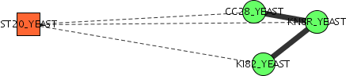

Figure 2: network MYS4_YEAST|MYS3_YEAST --> ST20_YEAST|BCK1_YEAST --> ST20_YEAST|MKK2_YEAST
In many cases a single protein in either the query network will be homologous with multiple proteins in the target network (or vice versa), which means that multiple compatibility nodes may be created which share a common protein. In some cases these compatibility nodes with a common protein can combine to form a result path. This results in situations such as figure 1 where the result path only includes one protein from the query network, or figure 2 where only two proteins from the query network are included. We call these duplicate node networks.

Figure 1: network ST20_YEAST|CG28_YEAST --> ST20_YEAST|KN8R_YEAST --> ST20_YEAST|K182_YEAST
Figure 2: network MYS4_YEAST|MYS3_YEAST --> ST20_YEAST|BCK1_YEAST --> ST20_YEAST|MKK2_YEAST
In general these results are not what is desired and therefore inclusion of Duplicate Node Networks is not allowed by default. However in some cases the resulting networks can be instructive so we therefore provide an option for including Duplicate Node Networks in the results.